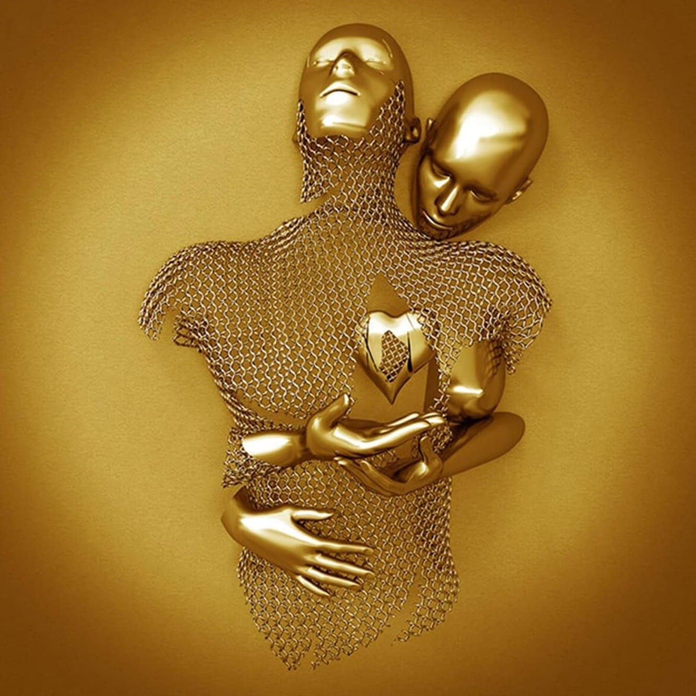

Guía rápida de conceptos (qué es y para qué sirve)
Box Model
- width: ancho del elemento.
- margin: espacio por fuera del borde (separa elementos).
- padding: espacio por dentro del borde (separa contenido del borde).
- border: contorno del elemento (grosor/estilo/color).
- border-radius: redondea esquinas.
- background: pinta el fondo (color o degradado).
Tipografía
- font-size: tamaño de letra (px, vw, etc.).
- font-weight: grosor del texto (400, 700, etc.).
- line-height: altura entre líneas (legibilidad).
- letter-spacing: separación entre letras (tracking).
- text-transform: convierte texto (uppercase, etc.).
- color: color del texto.
- text-shadow: sombra para contraste/profundidad.
Unidades
- px: tamaño fijo (no depende de la pantalla).
- vw: tamaño relativo al ancho de la ventana (1vw = 1%).
- ¿Cuándo usar? px para detalles; vw para títulos que escalan.
Transform
- translateX/Y: mueve el elemento sin romper el layout.
- scale: aumenta o reduce tamaño.
- rotate: rota el elemento.
Filters (filtros)
- saturate(): sube o baja intensidad de color.
- brightness(): sube o baja brillo.
- blur(): desenfoca.
- Se pueden combinar: filter: saturate() brightness() blur().
Animations
- @keyframes: define los pasos de una animación.
- animation-duration: duración.
- animation-timing-function: ritmo (linear, ease-in-out).
- animation-iteration-count: repeticiones (infinite).
- Loop sin corte: 0% y 100% deben “cerrar” parecido.
Font-face
- @font-face: permite cargar una fuente local (archivo).
- font-family: nombre con el que la usarás en CSS.
- src: ruta del archivo (ej: ./fonts/LEMON.otf).
- Uso: font-family: "LEMON";
Unidad 1) Box Model (cajas con color)
Caja Roja
border / padding / radius
Caja Verde
margin / border / pill
Caja Dorada
background gradient
Tarea
Crea 3 tarjetas (cuadrada, redondeada, pill) que se vean diferentes solo con box model. Twist: simula un doble borde (outline o box-shadow).
Unidad 2) Tipografía + Font-face
Antes (fuente del sistema)
Título con fuente del sistema
Después (font-face)
Título con LEMON (font-face)
Aquí practicamos font-size, font-weight, line-height, letter-spacing, text-transform, color y text-shadow.
EJEMPLO: text-transform: uppercase
Tarea
Crea un bloque tipográfico con 2 estilos: elegante y divertido. Twist: usa font-face y haz que el estilo “divertido” se logre solo con tipografía y color.
Unidad 3) px vs vw + text-shadow
A) px (fijo)
Título en px
Se mantiene parecido aunque cambie el tamaño de la ventana.
B) vw (responsivo)
Título en vw
Cambia con el ancho de la ventana: 1vw = 1%.
Tarea
Replica esta comparación con tus propios colores. Twist: agrega 3 capas de text-shadow solo al título en vw.
Unidad 4) Transform + Filters (ejemplo.jpg)

Tarea
Crea 3 versiones de la foto con filtros distintos. Twist: anima muy sutilmente el filtro de una imagen (micro pulso) sin que “parpadee”.
Unidad 5) Animaciones (CSS)
Tarea
Crea 2 animaciones: flotación suave y oscilación con rotación leve. Twist: agrega una animación con filter (brillo o saturación) sin marear.
Unidad 6) Proyecto final (3 figuras animadas)
Proyecto final
Cuadrado, círculo y rectángulo
Cada figura tiene su color, su texto dentro y su animación en bucle (sin hover).
Tarea final
Replica la escena final a tu estilo. Twist: agrega 2 figuras nuevas con animaciones propias (no copies las existentes).